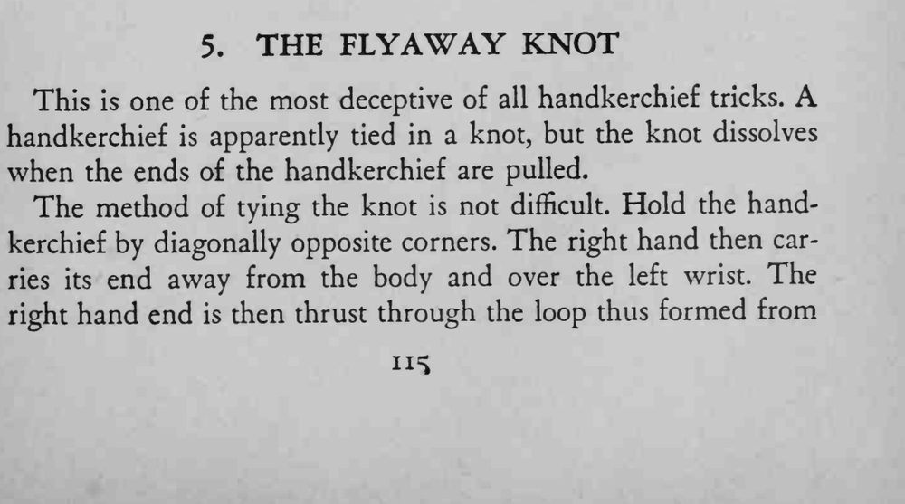
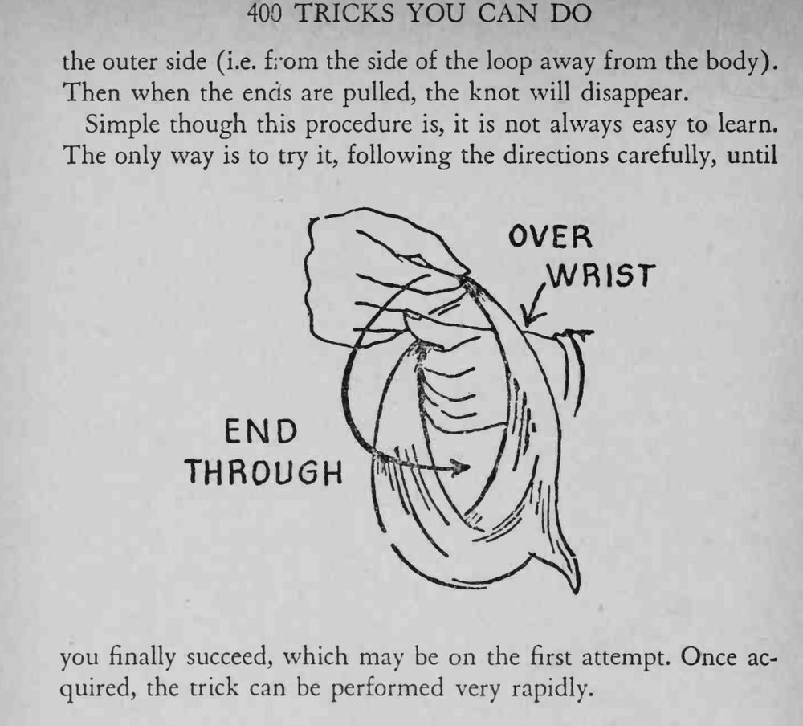

手帕看上去被打成了一个结，可两手一拉两端，结竟凭空消失。
穿环的方向必须是从外侧穿入，方向反了就拉不散。


This is one of the most deceptive of all handkerchief tricks. handkerchief is apparently tied in a knot, but the knot dissolves when the ends of the handkerchief are pulled. The method of tying the knot is not difficult. Hold the handkerchief by diagonally opposite corners. The right hand then carries its end away from the body and over the left wrist. The right hand end is then thrust through the loop thus formed from the outer side (i.e. from the side of the loop away from the body). Then when the ends are pulled, the knot will disappear. Simple though this procedure is, it is not always easy to learn. The only way is to try it, following the directions carefully, until you finally succeed, which may be on the first attempt. Once acquired, the trick can be performed very rapidly.